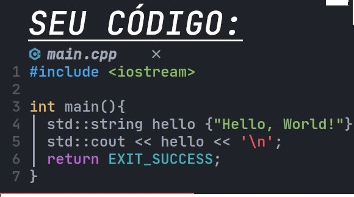

Linguagens de programação podem ser classificadas em baixo nível e alto nível, dependendo da abstração que oferecem em relação ao hardware. **Linguagens de baixo nível**, como Assembly, são próximas da linguagem de máquina, o que permite um controle preciso sobre o hardware. Elas são eficientes em termos de desempenho, mas exigem conhecimento detalhado da arquitetura do sistema e são mais difíceis de escrever e manter. **Linguagens de alto nível**, como C++ e Java, oferecem uma operação maior, facilitando o desenvolvimento de software. Elas permitem que os programadores escrevam códigos de forma mais intuitiva, utilizando estruturas de dados e funções complexas sem se preocupar tanto com os detalhes do hardware. C++ combina em ser mais competente com recursos orientados a objetos, enquanto Java é projetada para ser portátil e segura, com gerenciamento automático de memória. Essas características tornam as linguagens de alto nível mais acessíveis e produtivas para o desenvolvimento de aplicações modernas.
1 inMode(12, OUTPUT); Significa que foi definido o pino 12 como saída. Logo o pinMode é uma configuração de entrada/saída. 2 digitalWrite(12, HIGH); Significa que o comando escreve na saída 12 como ALTO (HIGH), que significa que o pino 12 vai ter 5V. Então se fosse BAIXO (LOW), significa que o pino 12 vai ter 0V 3 delay(1000); Significa que o comando faz o arduino esperar (1000ms) mil milissegundos que é igual a 1 segundo.
4 pinMode(A0, INPUT); Significa que foi definido o pino A0 como entrada analógica. Logo o pinMode é uma configuração de entrada/saída analógica. 5 analogRead(A0) Significa que será feita uma leitura da entrada analógica. Estes são uns dos 5 tipos de códigos C++, agora abaixo esta uma foto ilustrativa de como é feito. {dependendo do sistema em que o usuário estara criando} comandos usados com as próprias palavras da figura 1 1 import java.util.Scanner; O import faz a adição da biblioteca Java.util que importa o scanner. 2 int pot1 = 0, pot2 = 0, res = 0; A linha que define acima, significa que existe uma declaração de variável do tipo inteiro cujo o significado é “int” nome da variável = valor. 3 boolean led = false; A linha que define “boolean led = false” significa que existe uma declaração de variável do tipo boolean cujo o significado é “boolean nome da variável = valor”. 4 System.out.print("Digite o valor do potenciômetro 1: "); A linha de comando System.out.print("Digite o valor do potenciômetro 1: "); significa imprime na tela “ a frase digitada” e pula para a próxima. 5 pot1 = sc.nextlnt(); Significa que o Scanner vai ler do teclado um número do String e converter em inteiro para ser armazenado na variável “pot1”. 6 pot2 + sc.nextlnt(); Significa que o Scanner vai ler do teclado um número do String e converter em inteiro para ser armazenado na variável “pot2”. Estes são 6 tipos de comandos utilizados pelo JAVA {depende do sistema em que o usuário estará criando}